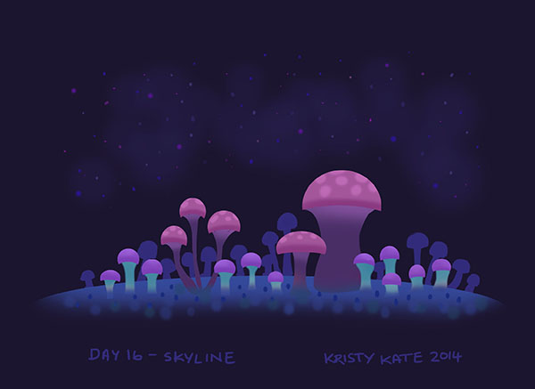
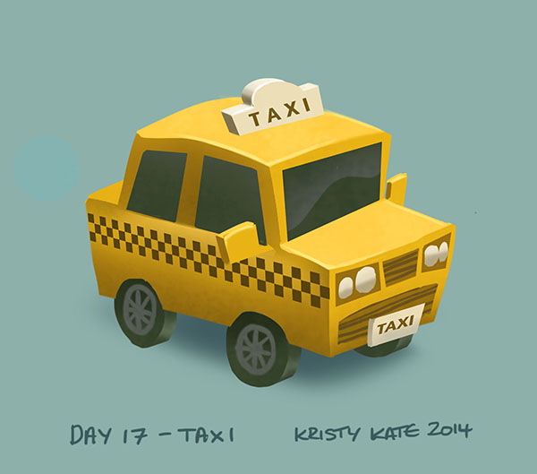
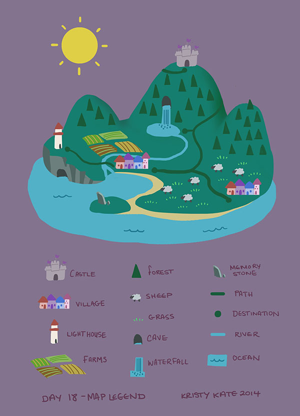
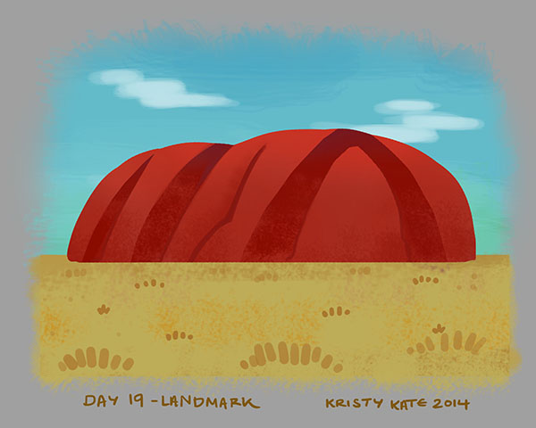

Week 23 Studies
August 25th - 31st
Hi all!
Another week down (is it just me, or did the week fly by??) and it's time to wrap up Spoonflower's #SpoonChallenge.
The general theme for the final week was cities, maps and urban life.
Day 16 - Skyline

Day 17 - Taxi

Day 18 - Map Legend

Day 19 - Landmark (Uluru)

Day 20 - Selfie
By taking part in the #SpoonChallenge I discovered that there's a lot of value in sketching with a daily prompt. This activity has been great for getting those creative juices flowing, drawing things I wouldn't usually consider, and, while they're not final pieces in themselves, I see potential for new pieces out of the sketches I made over the past 20 days.
Now that I've had a little break from study, it's time to jump back into figures and anatomy. And it just so happens that I've signed up for Pencil Kings next challenge, the Shading Drawing Challenge which starts tomorrow (perfect timing!). Can't wait to see what I learn this time around!
Until next time, all the best!
x Kristy Kate
+ + +
Have any thoughts on my sketches? Join me on my creative journey and share your own by leaving a comment (critique welcome) or connecting via Twitter or Facebook.